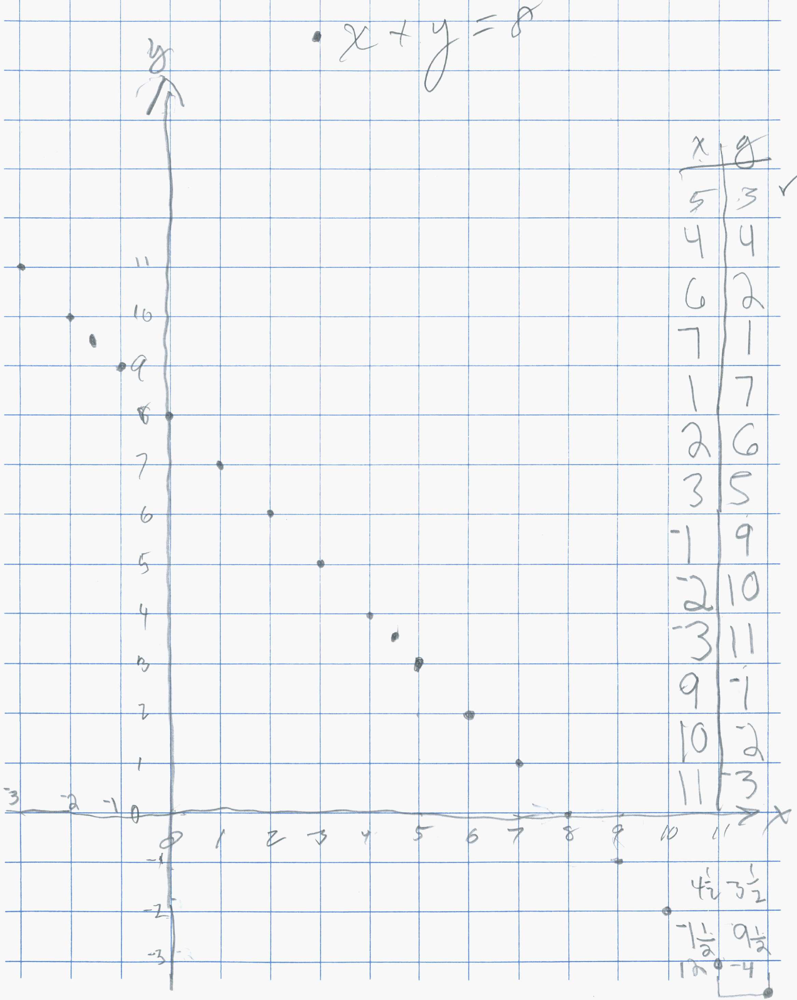
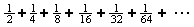

Daly, a 3rd grader, works on quadratic equations, infinite series, graphing x+y=8, multiplying mixed numbers, fraction <=> decimal <=> percent..
Oct. 9, 2002 Daly started working with Don on this day. His Mom teaches 5th grade and had two of Don's students from the past. It turned out that Daly's 3rd grade teacher Don had in the MAT program at Webster College in St. Louis in 1968!!
Don started Daly working on the square numbers, then looking at the differences:
Don found Daly knew about square numbers, like 32 = 9 now, and negative numbers, like 4 - 5 = -1 so he started Daly working on solving quadratic equations:
He found the two solutions for x2-8x+15=0, x2-7x+10=0, x2-10x+24=0, x2-11x+24=0, x2-25x+24=0 and x2-6 1/2x+9=0. In this last one he found out how to multiply 3 x 3 1/2 which he finally figured out to be 10 1/2 and finally figured out the 2 answers are 2 and 4 1/2.
Oct. 16, 2002 Daly made up a quadratic equation for Don, above. Daly worked on Daly worked on graphing equations, like x + y = 8 where he got into fractions and negative numbers below.

Daly also graphed x+y=12. And he multiplied 2 1/2 X 3 1/2 = 8 3/4 by counting the pieces in the diagram below:
On October 23, 2002 Don started Daly on an infinite series
He realized that goes to 1. Notice Daly's last piece is 1/412, but underneath he had the right number 512.
On October 30, 2002 Don asked Daly
to do  and Don not being clear,
Daly did 1/2 of 1/3, instead of 1/3 of 1/3: he did the rest correctly, and at
some point Don will have Daly work on this to find where it goes. Do you
know?
and Don not being clear,
Daly did 1/2 of 1/3, instead of 1/3 of 1/3: he did the rest correctly, and at
some point Don will have Daly work on this to find where it goes. Do you
know?
On November 6 & 13, 2002, Don got in a discussion with Daly about per cent, decimals and fractions. Per cent means (how many cents in a dollar?- 100), per means divided by, so per cent means ÷ 100. Don asked Daly how many squares on the card? (the "squares" are all supposed to be the same size). There are 100. Don shaded in 2 rows of 10, or 20 squares. So these 2 rows represent 20% = 20/100 = .20 . Don asked him, how many pieces that size are in the whole cake. He said 5. So that piece of 20 squares is 1/5 of the cake, and 1/5 = 20/100 = .20 = 20% . 1 square would be .01 = 1% = 1/100 of the cake.
Then Don asked Daly to color in a piece of the cake. He shaded in the green piece and he said there were 3 1/3 of them in the whole cake!!! So the name of the green piece is 1/(3 1/3). That was really exciting to see this! He also said it was 30/100 = .30 = 30%. Then Don showed Daly how he could change 1/(3 1/3) to a simple fraction- see his work in green below.
Daly was involved with the following ideas above:
1. complex fractions (a fraction in the fraction)
2. multiplying a whole number by a mixed number
3. changing a % to a fraction and a decimal and they are different
ways of writing the same number
4. Reducing fractions and finding equivalent fractions (=fractions,
multiplying by 1, even if it is the
form of 2/2 or dividing by 1!)
Daly brought up a problem from school, like John had 18 more coins than Kevin, and together they 86. How many coins did they each have. They talked about that for a while and he was able to figure it out.
November 20, 2002 As in last weeks work, Daly colored in 8 rows on the 10x10 square and found the fraction and decimal and % name for that, .80= 80/100 = 4/5= 80% = 1/(1 1/4) just to make sure he had it. then he made up 60%=60/100=.60=15/25=3/5. Daly solved equations the equations
2x + 3 =17 {7} 2x + 3 = 18 {7 1/2} 2x + 3 = 19 {8} and 3x + 5 = 18 {4 1/3}
Great job Daly; it has been exciting to work with you!
Don suggested he then make up some equations for Mom and Dad to figure out.